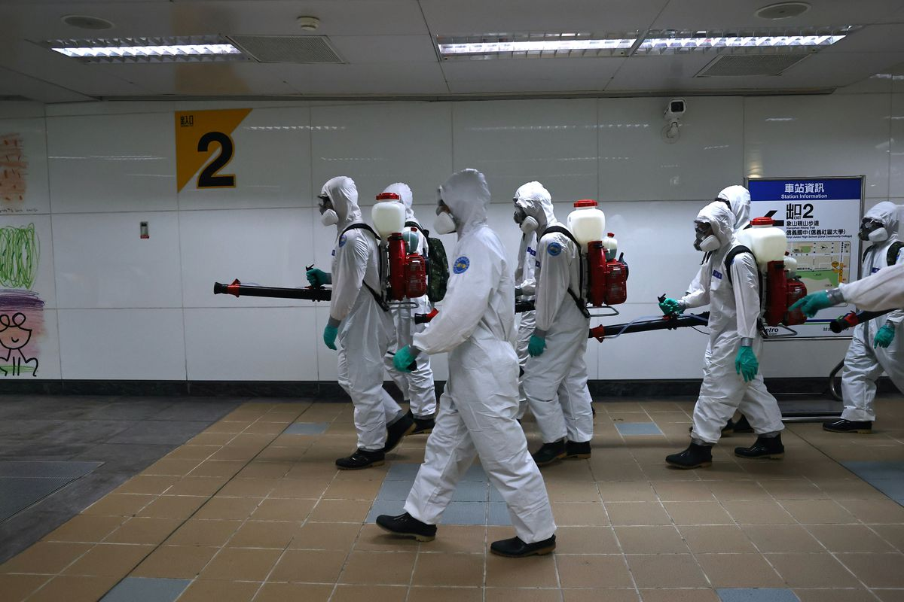

The COVID-19 was just a pandemic caused by a coronavirus called SARS-CoV-2 that came from bats and pangolins. It would then spread around the world starting from January 2020. There are also myths such as 5G stations, which just emit radio waves, could spread the coronavirus. In order to stop the spread people should follow the authorities instead of random people on the streets saying nonsense. China would then very quickly order a lockdown that would have 9 million people tested in a single city. The Chinese government would also take stadiums for temporary hospitals. The United States of America did not do that well because they thought that COVID-19 would not spread across to other countries (or at least America), so they had not prepared anything. Donald Trump only went strict with the border rules and not anything else. Australia was very prepared and had made both the border rules and community rules stricter. The Australian government also did multiple lockdowns and closure of state borders for COVID to spread less widely. France was also very unorganized and did not put any focus on the hygiene habits of people. Also, millions of people are affected by this pandemic and many suffer from poverty and undernourishment.In order to stop the coronavirus, we must listen to the government (or authorities) and not believe in myths. Also, look out for symptoms and if you have any, consult a doctor immediately. Keep good indoor ventilation and also keep healthy by changing your diet. Since the vaccines are coming, people can take them and there will be soon a less chance of getting COVID-19.
